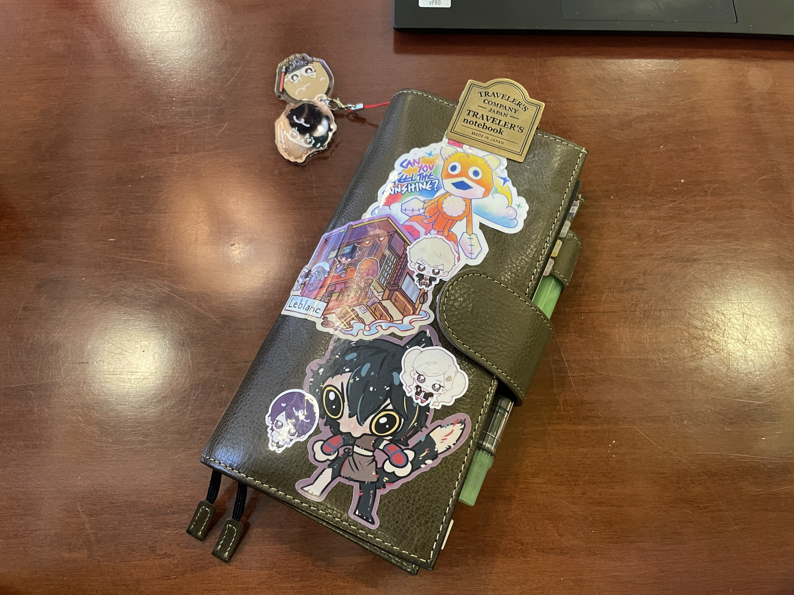

MY JOURNALING SETUP
I usually don’t post a techo kaigi at the beginning of the year. A lot of my notebook journey is experimentation, and there’s a pressural guilt involved with publically announcing what notebooks and planners you’ll be using into the new year, only to end up no longer using them two weeks in.
I only like gushing about my notebooks if I have felt some sort of “planner peace”—a commonly used term by planner enthusiasts for when you discover a planner system that just works for you.
I think I finally know how planner peace really feels, akin to a lightbulb igniting in my head, like a puzzle piece clicking perfectly into place and the satisfaction that follows. I finally have a techo kaigi that I feel is worth displaying.
What is a techo kaigi? Written as 手帳会議, it is essentially a self-reflective meeting with yourself on what techoes you’ll be using for the year. A techo is a term to describe a planner-notebook system, as their popularity started booming in the Japanese corporate world decades ago.
So I’m happy to share my current system, in case it may help someone else.
1) HOBONICHI COUSIN ENGLISH: MORNING PAGES + EXPENSE TRACKER
Damn you, Julia Cameron. Morning pages are highly effective, just like you’ve promised.
If you’re not familiar with the concept of morning pages, it is the act of writing three pages of stream-of-consciousness as soon as you get out of bed, popularized by Julia Cameron’s book, The Artist’s Way. I extensively keep myself up-to-date with the Hobonichi Techo website because of their online magazine, which features advice with keeping a notebook and examples of how others use their techo. I was especially inspired by a Hobonichi staff member who used their Hobonichi Cousin for morning pages.
Just a week into using it, I’ve felt myself open up more. What felt like an unintelliglble cacophony of constant thoughts began to clear away. I find myself able to find more ideas than I ever have before.
I know the original method is to write three pages every morning, but I wanted to ease myself into the habit first with one page per day. Besides, I’m clearly still getting great benefits from it.
As for the weekly pages, I use them as my expense tracker. My goal this year is to pay down as much credit card debt as possible, and nowadays, it’s easier to be less mindful about spending when the primary way to pay is with a card. So I took inspiration from Zun’s accounting book and I’ve been logging my expenses there ever since. Has this helped reduced my spending though?
…
I plead the fifth.
2) HOBONICHI 5-YEAR TECHO: DIARY
While writing in my Hobonichi Cousin is my morning routine, this is my nightly routine. Now that we’re in the last half of this terrible decade, I figured I wanted something to log these next five years.
Every night, I write in an A5-sized 5-year Techo. It’s usually a brief paragraph of what I did and what my thoughts were. I’m really looking forward to looking back on previous years as I continue to write in it. I’m still bit sure about what to do with the right gridded page for each day. I don’t want to make the book bulky when it’s already huge, so I’d prefer to avoid adding additional ephemera… For now, I’m swatching new inks and testing new fountain pens on them.
3) SOFT PAPER STUDIOS OG WEEKLY DIARY: EVERYDAY CARRY NOTEBOOK

This is it. My Holy Grail of planners. This was the puzzle piece that’s been missing from me this whole time.
I love Hobonichi—and by extension, I want to love the Hobonichi Weeks. But there’s something about weekly dated planners that makes my brain want to stomp and cry and throw a big tantrum after a few weeks of using one. (Spoiler alert: it’s the neurodivergence.)
This planner, however, was the perfect compromise. It has monthly, weekly, and daily pages, all of which were undated. I no longer have to feel guilt over missed days, over blank pages. I can just flip to the next page and move on.
Bonus: it still had my beloved Tomoe River paper: my favorite type of paper to journal on.
And the size. It’s perfect. It’s narrow and tall, similar to the Traveler’s Notebook, but just slightly smaller, increasing its portability. It even fits in my small Uniqlo crescent bag with room to spare, and that’s the smallest bag I own. Combine it with the Moterm Weeks cover, and it’s a perfect everyday carry tool for me.
Let me show you my planner setup. It’s been working incredibly well for me since the start of December 2024.
I don’t keep credit cards in my cover’s pockets. What I do instead is keep PVC cards with washi tape samples. I also store coupons I want to use, making sure to have the expiration date showing so I know when to use them by.
With the monthly pages, true to their name, I get an overview of the month. Here, I track upcoming events, as well as work meetings and when bills are due.
On the left-hand side, I jot down to-dos I want to complete by the end of the month. Below the to-do list, I write down a handful of goals—usually stuff to do with my hobbies and interests and not necessarily tasks I need to complete.
There’s space below for me to be able to set up a habit tracker. I like to track four habits I want to incorporate into my daily routine, and it’s motivating whenever I get to fill in a square each day I do the habit.

This is the most important part of my system. If I’m not able to write in any of my other notebooks, I try to make an effort to write in my weekly pages anyway.
Plus, my weekly setup is simple. It’s literally the basic Bullet Journal method, just formatted in a layout that pleasantly itches my brain.
Similarly to a Hobonichi Weeks, the weekly pages offer a layout with a weekly horizontal grid page on the left and a gridded notes page on the right.
In the left page, I use the Bullet Journal method to record and track events and tasks. I don’t necessarily expect myself to complete a task within 24 hours unless I have a strict deadline, in which case I mark the task with an asterisk. This layout is convenience in the sense that it lets me aim to complete tasks by the end of the week at the latest. If I don’t, I can migrate them to the next week.
The right page is reserved solely for daily logs. Essentially, I mark down space where I can write a few bullet points about what happened in my day. Bare minimum memory keeping, as I like to call it.
The notes section of my techo is especially valuable. I treat that section as a space for commonplacing, long-form journaling, and brainstorming. I basically treat it like a writer’s notebook the way an artist keeps a sketchbook. I play. I steal. I experiment. I learn.
I love adding a "one line a day" page for each month. I basically write one highlight of my day, good or bad. It's fun to look back on them when they're entirely filled up.
Fuck, I love this thing.
Hope this was interesting to read! Feel free to reach out to me via email at ghostingpen[AT]gmail.com. I am more than happy to help others figure out a notebook system that suits their needs.